Background music(Ukraine National Anthem)
You can turn it on and off.
Time since the start of the war:
The Russo-Ukrainian war has been going on since 2014 with the Russian annexation of Crimea. Russia invaded Ukraine on 24 Feburary 2022. It caused around 7.8 million refugees to flee from Ukraine. There have been many invasions of Ukraine because of its strategic position - it has a long coast along the Black Sea and it is between Asia and Europe. The earliest Russian invasion of Ukraine was in 1659. However, the current invasion is intended to stop Ukraine from joining NATO (North Atlantic Treaty Organisation). However, the invasion has left Russia's next-door-neighbours Sweden and Finland pushing to join Nato. This timeline will show you the progression of the invasion.
The invasion began on the morning of 24 February, when Russian president Vladimir Putin announced a "special military operation" aiming for the "demilitarisation" and "denazification" of Ukraine. In his address, Putin espoused irredentist views, challenged Ukraine's right to statehood, and falsely claimed Ukraine was governed by neo-Nazis who persecuted the ethnic Russian minority. Minutes after that, Russia shot missiles into Ukraine and launched a ground invasion. Ukrainian president Volodymyr Zelenskyy enacted martial law and a general mobilisation.
March-April 2022
The Russian northern advance towards Kyiv stopped in its tracks and by April it was being pushed back north. However, on the southern and south-eastern fronts, Russia captured Kherson in March.
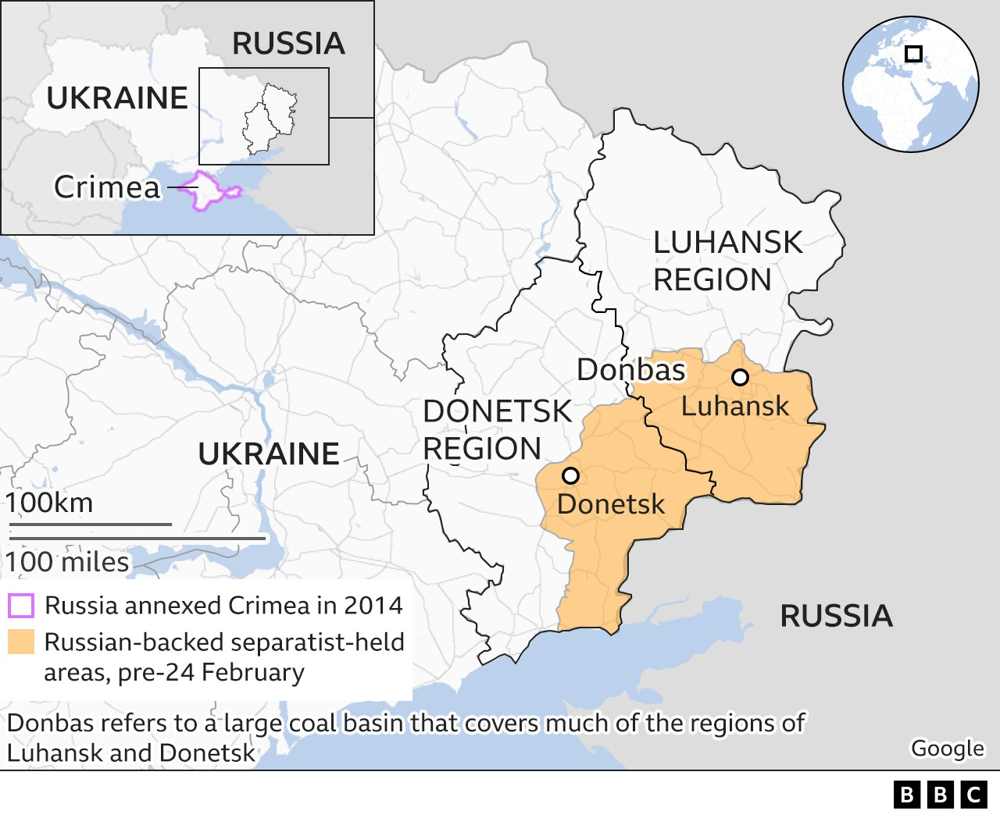
May 2022
Russia captured Mairupol in May after a siege of the city.Pro-Russian separatist forces are seen in the Donetsk Oblast in eastern Ukraine on May 28, 2022. Ukraine's armed forces said in an operational update that seven Russian attacks had been repulsed in Donetsk and Luhansk in the previous 24 hours.
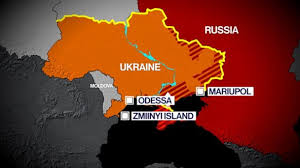
June 2022
Ukrainian forces attacked Snake Island (Zmiinyi island). In response to Ukrainian strikes, Russian forces reportedly deployed additional air defense and rocket group units, as well as special forces, to the island.
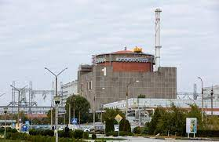
August 2022
Russian shelling hit cities near Ukraine’s Zaporizhzhia nuclear power plant overnight.Schools, homes and other civilian infrastructure had been destroyed or damaged. Ukrainian forces launched counteroffensives in the south.
September 2022
Ukraine launched a counteroffensive in the east. Soon after, Russia announced the illegal annexation of four partially occupied oblasts (Donetsk, Kherson, Luhansk and Zaporizhzhia).
October-November 2022
On 8 October 2022, the Crimean Bridge partially collapsed due to an explosion.Russia later blamed Ukraine for the blast, and launched retaliatory missile strikes against Ukrainian civilian areas. Since mid-October, Russia has carried out waves of strikes on Ukrainian electrical and water systems. On 15 November 2022, Russia fired 85 missiles at the Ukrainian Power Grid, causing major power outages in Kyiv and neighboring regions.
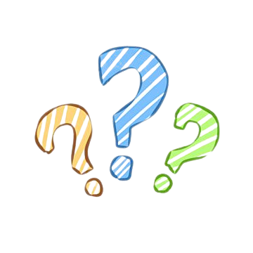
MORE INTERESTING FACTS ABOUT UKRAINE
Importance of Ukraine
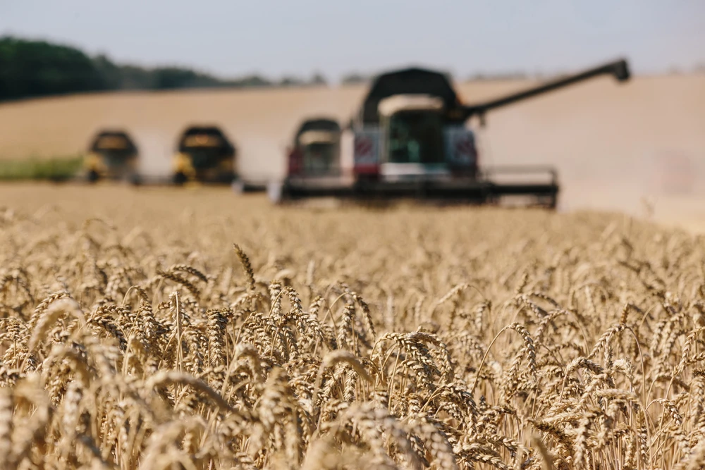Ukraine is the 2nd largest country in Europe, and the 44th largest in the world. It has a population of around 40 million people. Both Ukraine and Russia are leading producers of wheat which is why the war is detrimental not just to Ukraine and Russia, but to the whole world.
History of Ukraine
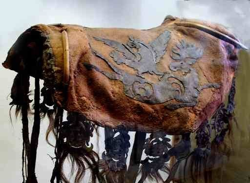In the 6th to 3rd BCE, the Scythians settled in what is now Ukraine. If you like to ride horses, thank them as they invented the saddle. The Scythian army was strong because of that. At the same time, there were Greek colonies on what are now the Ukrainian shores of the Black Sea and during their rule in what is today Ukraine, the Romans established economic and cultural contacts with the neighboring Scythians, Sarmatians, and tribes of the Zarubyntsi culture.
In 882AD, the Kievan Rus was established. The modern nations of Belarus, Russia, and Ukraine all claim Kievan Rusʹ as their cultural ancestor, with Belarus and Russia deriving their names from it.
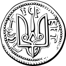In 998AD, the ruler of the Kievan Rus', Vladimir the Great, converted to Christianity and Christianized the Kievan Rus'. This act fundamentally altered the historical trajectory of the Rus' and led to his declaration as a saint in both Western Christianity and the Eastern Orthodox Church, Vladimir is thus also known as Saint Vladimir or Saint Volodymyr. The coin on the left is the Rurikid princely emblem of Vladimir the Great depicted on a coin. In AD1240, the Kievan Rus disintegrated under the pressure of the Mongol invasion of the Rus'.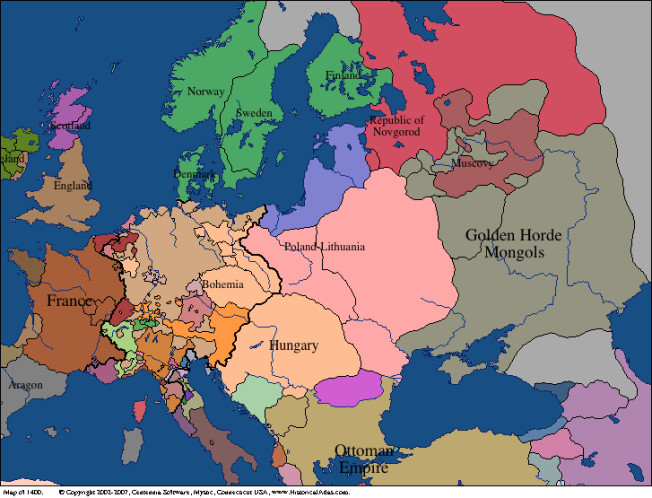
During the 14th and 15th centuries, present-day Ukrainian territories came under the rule of four external powers: the Golden Horde, the Crimean Khanate, the Grand Duchy of Lithuania and the Crown of the Kingdom of Poland. The latter two would then merge into the Polish–Lithuanian Commonwealth following the Union of Krewo and Union of Lublin.
The 1648 Ukrainian Cossack (Kozak) rebellion or Khmelnytsky Uprising, which started an era known as the Ruin (in Polish history as The Deluge), undermined the foundations and stability of the Commonwealth. The nascent Cossack state, the Cossack Hetmanate, usually viewed as precursor of Ukraine, found itself in a three-sided military and diplomatic rivalry with the Ottoman Turks, who controlled the Tatars to the south, the Commonwealth of Poland and Lithuania, and the Tsardom of Muscovy to the East.The Zaporizhian Host, in order to leave the Polish–Lithuanian Commonwealth, sought a treaty of protection with Russia in 1654. This agreement was known as the Treaty of Pereyaslav (To celebrate the 300th anniversary of the treaty, the Soviet Union gave the Ukrainian Soviet Socialist Republic Crimea but that's not important right now).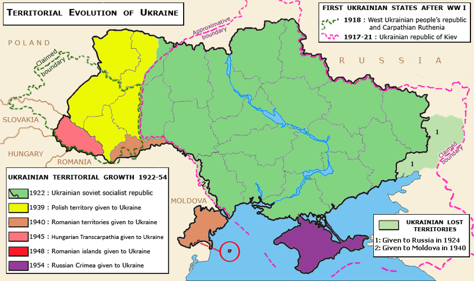
In 1917, When the Bolsheviks overrthrough the russian monarchy, Russia was in chaos.Ukraine took the chance to declare itself independent but independence was short lived as most Ukrainian lands were incorporated into the Soviet Union and the remainder, in western Ukraine, was divided among Poland, Czechoslovakia, and Romania.From 1929 to 1939, The Great Depression happened.The USSR was not that affected as it was a communist country but from 1930 to 1933, a famine known as Holodomor(Terror Famine) left millions dead, the majority of them Ukrainians.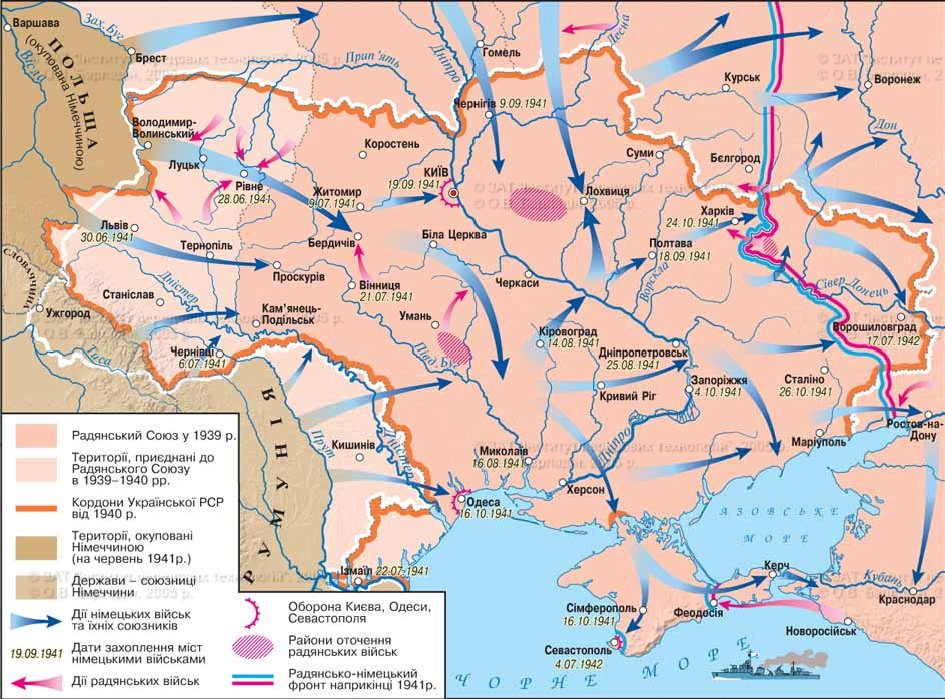
After World War II, some amendments to the Constitution of the Ukrainian SSR were accepted, which allowed it to act as a separate subject of international law in some cases and to a certain extent, remaining a part of the Soviet Union at the same time. In particular, these amendments allowed the Ukrainian SSR to become one of the founding members of the United Nations (UN) together with the Soviet Union and the Byelorussian SSR. This was part of a deal with the United States to ensure a degree of balance in the General Assembly, which, the USSR opined, was unbalanced in favor of the Western Bloc. In its capacity as a member of the UN, the Ukrainian SSR was an elected member of the United Nations Security Council in 1948–1949 and 1984–1985.
With the collapse of the Soviet Union in 1991, Ukraine became an independent state, formalised with a referendum in December 1991. On 21 January 1990, over 300,000 Ukrainians organized a human chain for Ukrainian independence between Kyiv and Lviv. Ukraine officially declared itself an independent country on 24 August 1991, when the communist Supreme Soviet (parliament) of Ukraine proclaimed that Ukraine would no longer follow the laws of USSR and only the laws of the Ukrainian SSR, de facto declaring Ukraine's independence from the Soviet Union. On 1 December, voters approved a referendum formalizing independence from the Soviet Union. Over 90% of Ukrainian citizens voted for independence, with majorities in every region, including 56% in Crimea. The Soviet Union formally ceased to exist on 26 December, when the presidents of Ukraine, Belarus and Russia (the founding members of the USSR) met in Białowieża Forest to formally dissolve the Union in accordance with the Soviet Constitution. Ukraine was finally independent.
Significance of the Ukrainian flag
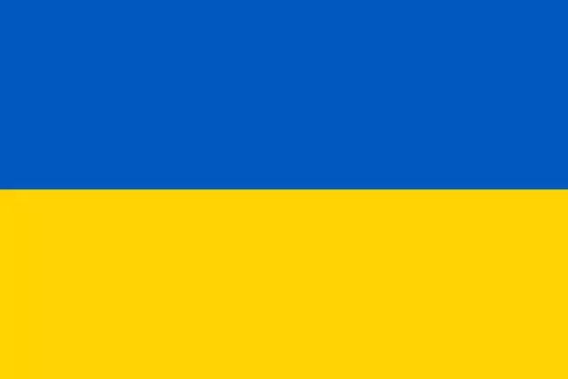The modern State flag of Ukraine was officially adopted in 1992 when the Soviet Empire disbanded. The yellow and blue bicolour from the Ukrainian People’s Republic was chosen. The colours symbolise blue sky above the yellow field of wheat representing Ukraine and the Ukrainians as they are -- freedom-loving, independent, brave, and vibrant.
Important Ukranians
Volodymyr Zelenskyy – and his staff of professional communicators – are very good at strategic communication, and it should be noted that Zelenskyy was an actor and a comedian before he was elected president in 2019. He is trained to be on the stage and in the limelight, communicating to the audience not only with words, but also by way of voice control and being conscious of his body language, posture, visual identity etc.
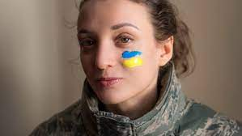From the New York Times: Women have become an omnipresent force in Ukraine’s war. They are increasingly joining the military, including in combat positions, and spearheading volunteer and fund-raising efforts. And with men still making up a majority of combatants, women are taking on extra roles in civilian life, running businesses in addition to looking after their families.
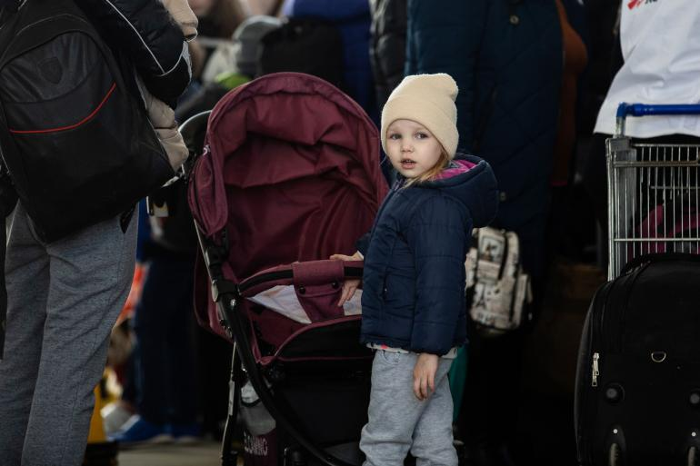The children of Ukraine have endured more than nine months of escalating devastation and displacement. Children continue to be killed, wounded and deeply traumatized by the violence all around them. Schools, hospitals and other civilian infrastructure on which they depend continue to be damaged or destroyed. One month into the war in Ukraine led to the displacement of 4.3 million children – more than half of the country’s estimated 7.5 million child population. This includes more than 1.8 million children who have crossed into neighbouring countries as refugees and 2.5 million who are now internally displaced inside Ukraine.
Disclaimer: The views expressed here are my personal opinions based on articles I read online. My sole intent is to raise more awareness of the Russia Ukraine war, to help the people affected. Sources & References: Wikipedia, CNN, BBC, New York Times, Google Maps, Youtube


.gif)